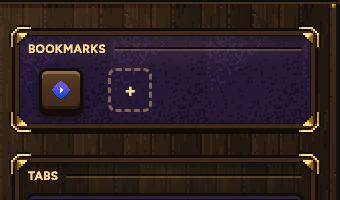
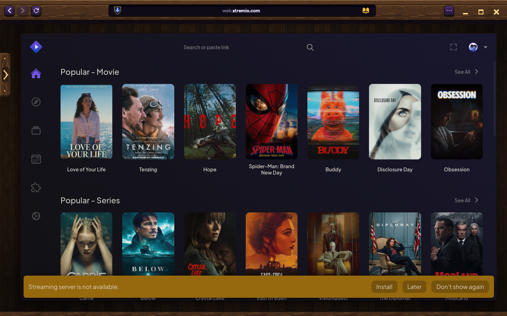
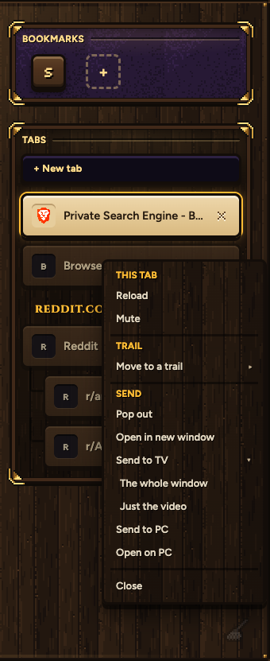
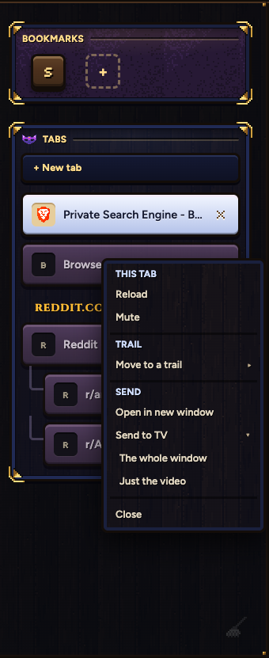
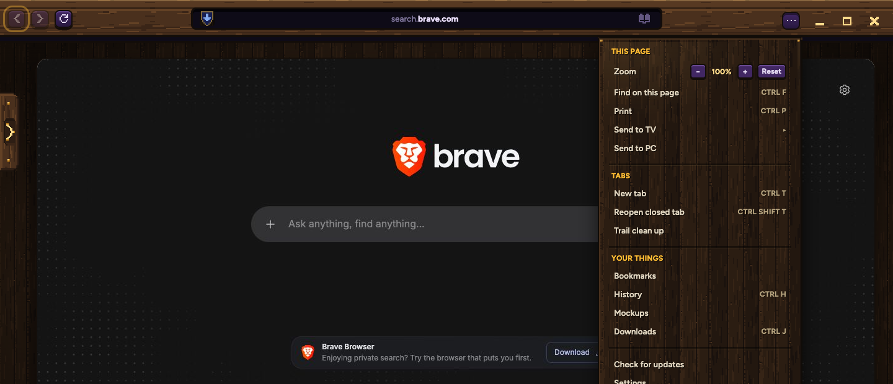

Stremio lives on your bookmarks shelf. Anything can go to your TV, yeet, from the tab's right-click or the ⋯ menu: the whole window, or just the video. Send to PC moves into those menus too, so the tab rows stay clean.
Normal Samara only; the secret window has its own shelf and no Stremio. The icon is Stremio's own, from its site.

Stremio's own page, inside Samara's frame. Sign in once with your Stremio account and your library and add-ons are there. The yellow bar is how it looks TODAY: your Stremio engine is running, but Samara's home-network guard stops the page reaching it. The build lets Stremio, and only Stremio, reach its engine (and starts it quietly when it isn't running), so the bar goes and streams play.

Three labelled groups, like the ⋯ menu, and Close on its own at the bottom. Send to TV opens to its two choices. On the right, the secret window's: nothing there ever leaves it for another computer.
Normal Samara

The secret window


It hangs from the address bar like every Samara ask, in the TV's own colour. Once yeet is set up as a second screen, The whole window just goes, every time.
Once only: your Mac needs yeet as a second screen. Samara opens the place to turn it on.
While it plays
A small TV lights up in the address bar and breathes once, then rests, faintly violet. Nothing drops down by itself.
...and when you click the TV
Your TV remote plays and pauses it. Bring it back puts it in the tab where it left off.
Pixel art tutorial for beginners, from YouTube.